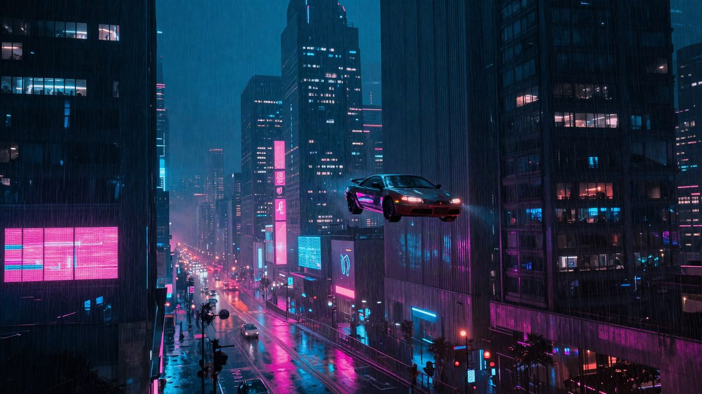

Blade Runner možda dobiva AAA igru: Alcon potvrdio razgovore sa studijima

Alcon Entertainment, vlasnik franšize Blade Runner, potvrdio je da je razgovarao s razvojnim studijima o AAA igri. Službeno nije najavljen nikakav projekt, a nije poznato radi li neki studio već na igri. Serija Blade Runner 2099 izlazi 25. studenoga na Prime Videu.
Alcon Entertainment je potvrdio da je razgovarao o izradi AAA igre prema franšizi Blade Runner. Andrew Kosove, supredsjednik uprave Alcona i izvršni producent serije Blade Runner 2099, to je rekao u intervjuu za IGN.
Kosove je upitan je li Alcon razgovarao s razvojnim studijima o igri u stilu Cyberpunka 2077. Odgovorio je potvrdno, uz napomenu da bi igra trebala biti AAA te da bi naglasak trebao biti na interakciji igrača sa svijetom.
Većih detalja nema. Službeno nije najavljen nikakav projekt, pa nije poznato radi li neki poznati studio već na igri ili su razgovori još u fazi pregovora. Čak i ako se razvoj uskoro odobri, do izlaska bi vjerojatno prošlo još nekoliko godina.
Dosadašnje igre
Blade Runner u igrama nikad nije pronašao pravo uporište, iako su njegov vizualni stil i teme jako utjecale na žanr. Najpoznatija je igra iz 1997. godine, 3D point-and-click avantura studija Wildwood. Bila je dobro prihvaćena, no remaster Enhanced Edition studija Nightdive iz 2022. izašao je s problemima, među ostalim s grafičkim greškama neuobičajenima za Nightdiveove remastere.
Annapurna Interactive je 2023. najavila Blade Runner 2033: Labyrinth. Većina razvojnog tima napustila je Annapurnu 2024. Vjeruje se da je igra otkazana jer se više ne vodi na Steamu ni na Annapurninim stranicama.
Alcon se, čini se, odmaknuo od tog remastera i od projekta Labyrinth te sada za franšizu planira AAA igru.
Serija stiže prije igre
Blade Runner 2099 izlazi na Prime Videu 25. studenoga. Buduća igra nije službeno najavljena pa nisu poznati nikakvi detalji o izlasku.
Izvor: Polygon
Povezani članci
- Cyberpunk: Edgerunners 2 je stigao na Netflix, a Cyberpunk 2077 dobiva patch 2.5 s novim sadržajem iz animea20. listopada 2026.
 Čovjek iz Chengdua s 4.000 juana (oko 500 eura) napravio je AI seriju od 96 epizoda i skupio 600 milijuna pregleda13. studenoga 2026.
Čovjek iz Chengdua s 4.000 juana (oko 500 eura) napravio je AI seriju od 96 epizoda i skupio 600 milijuna pregleda13. studenoga 2026. Wolfenstein 3 službeno u izradi: MachineGames radi novi glavni nastavak serijala13. studenoga 2026.
Wolfenstein 3 službeno u izradi: MachineGames radi novi glavni nastavak serijala13. studenoga 2026.